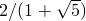

set size (<width>|ratio <ratio>|noratio|square)
The setting size is deprecated: use set width instead. It sets the width of the plot in centimetres. However, the command set size, when followed by the keyword ratio, is still used to set the aspect ratio of plots. See the ratio setting below for details.
set size noratio
Running:
set size noratio
resets Pyxplot to produce plots with its default aspect ratio, which is the golden section. Other aspect ratios can be set with the set size ratio command.
set size ratio <ratio>
This command sets the aspect ratio of plots produced by Pyxplot. The height of resulting plots will equal the plot width, as set by the set width command, multiplied by this aspect ratio. For example:
set size ratio 2.0
would cause Pyxplot to produce plots that are twice as high as they are wide. The default aspect ratio which Pyxplot uses is a golden ratio of .
set size square
The command:
set size square
sets Pyxplot to produce square plots, i.e. with unit aspect ratio. Other aspect ratios can be set with the set size ratio command.